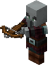
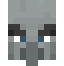
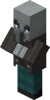
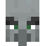
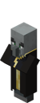
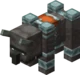
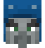

Vesničané
Vesničané jsou neutrální NPC ve hře Minecraft
Hráč je může při průběhu hry potkat ve vesnicích kde většina z nich žije
Vesničané kteří ve vesnicích nežijí jsou buď Trading Vesničané, nebo Illageři
Illageři
| Jméno | Ikona | Poznámka | Obrázek |
|---|---|---|---|
| Pillager | 
| Pillageři používají kuši a je to nejčastější typ Illagerů |  |
| Vindikátor |  | Vindikátoři disponují svou rychlostí a velkým poškozením, v ruce mají železnou sekeru (Vindikátor přejmenovaný na "Johnny" bude nepřátelský vůči všemu co potká, toto chování odkazuje na film Shinning) |
 |
| Evoker |  | Evokeři bojují z dálky, sesílajíc kouzla na podporu svých spojenců, spawnují takzvané fangs, které na zemi vytvoří velké množství tesáků, které zraní hráče (nezávisle na brnění, či obtížnosti) za 6 hp |
 |
| Ravager | 
| Tyto velmi odolné bestie dokáží ničit určité bloky a slouží jako transport Illagerů při nájezdech na vesnice |  |
| Illusioner |  | Illager mágové sloužící jako podpora při nájezdech kteří používají lektvary slepoty, luk a šípy |
S vesničany se také dá obchodovat za emeraldy, popřípadně emeraldy můžete za určité předměty od vesničanů získat
Vesničané jsou jediní neutrální mobové, na které útočí Zombie, v případě zabití vesničana Zombiem, je v závislosti na herní obtížnost šance, že se vesničan promění v Zombie Vesničana
V dostatečně velké vesnici se po určité době objeví železný golem, který vesničany ochraňuje před všemi agresivními moby
Vetšina vesničanů má také svou profesi,kterou získá při kontaktu s blokem patřící k dané profesi